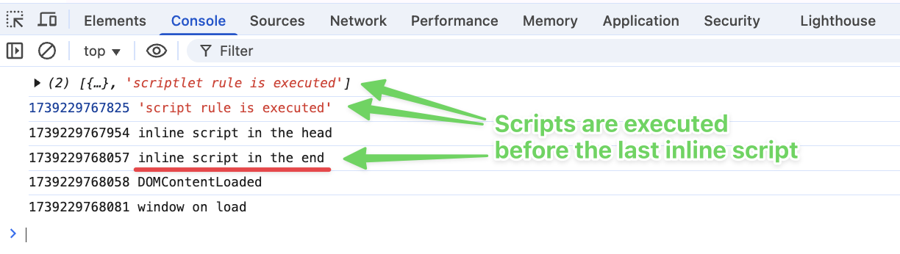

- Open devtools
- Reload page
-
Make sure that script and scriptlet rules were injected at least before the inline script at the end.

⚠️ Note: In Firefox, CSP may prevent execution of injected scripts,
but they will be executed eventually — as soon as possible.
Related:
AdguardBrowserExtension#1733